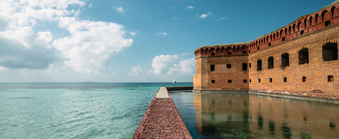
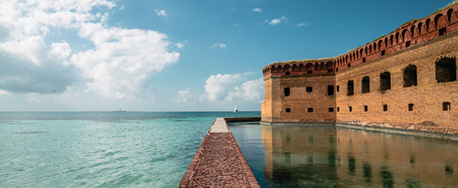

I Do?
Donate
Donating any amount of money can help a small national park gain the funding it needs to grow or a large one the funding it needs to maintain its natural beauty. Found below is a list of various donation sites to help your National Parks thrive.
• National Park Service
• National Park Foundation
• National Parks Conservation Association
• The Nature Conservancy
Visit Smaller Parks
Voyageurs National Park, Minnesota:
Known for its outdoor activity options year-round, including cross country skiing and berry picking and an occasional aurora borealis sighting.
Guadalupe Mountains National Park, Texas:
Home to four of Texas’s highest peaks including the “Top of Texas”, Guadalupe Peak, and more than 80 miles of hiking trails.
Dry Tortugas National Park, Florida:
This park owns seven small islands where snorkeling is just the beginning and is part of the third-largest reef system in the world, located in the Florida Keys.
Lake Clark National Park and Preserve, Alaska:
Incredible sight seeing opportunities lie here including iconic Alaskan turquoise lakes, brown bears, and even glaciers in which formed this park’s landscape.
Congaree National Park, South Carolina:
This park is home to some of America’s tallest trees, America’s largest expanse of old-growth forest, and even the natural phenomenon of synchronous fireflies.

 
